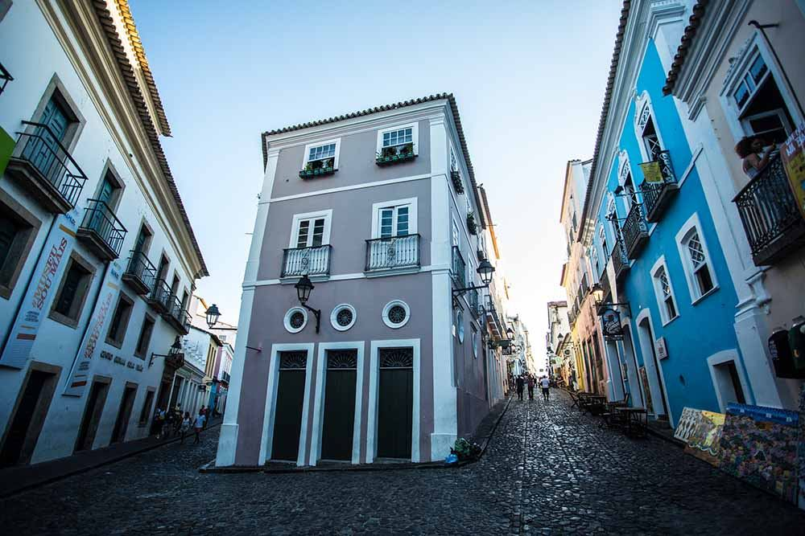

Ruas de Pelourinho - BA
Por essas ruas há diversas casas multicoloridas, que dão uma sensação de alegria no ambiente. Nessa região há a maior concentração de restaurantes e bares, onde você pode desfrutar da culinária baiana e descobrir um pouco mais sobre a tradição local.
Essas ruas também são palco para ensaios de Olodum e apresentação de cantores famosos, além de oferecerem artesanatos diversos.
Bairro de Pelourinho - Salvador, BA